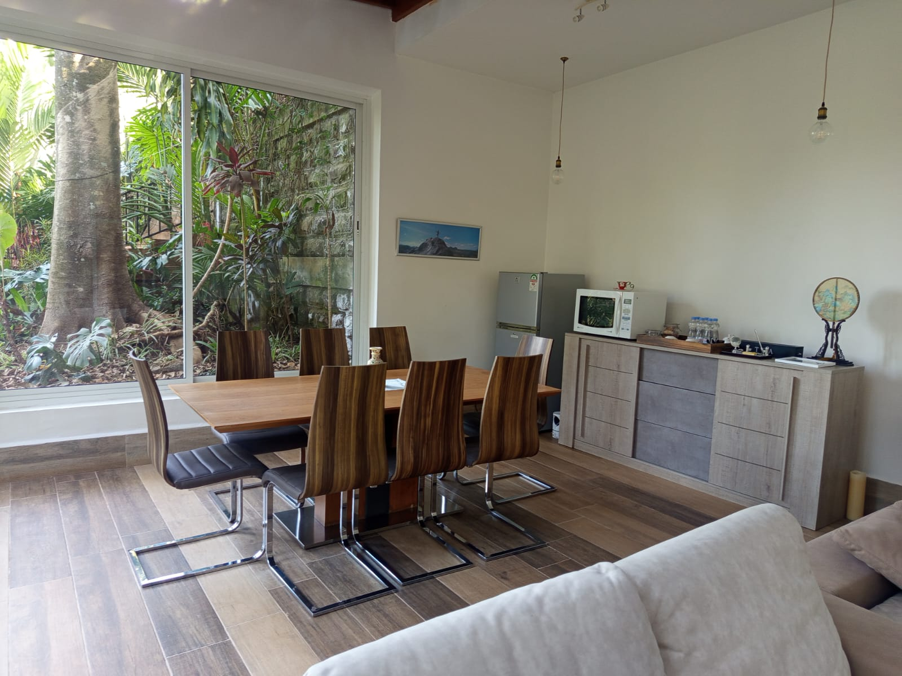
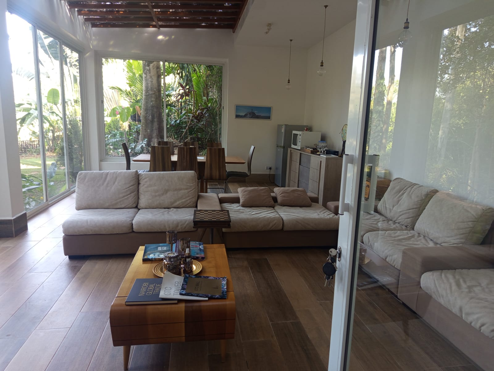
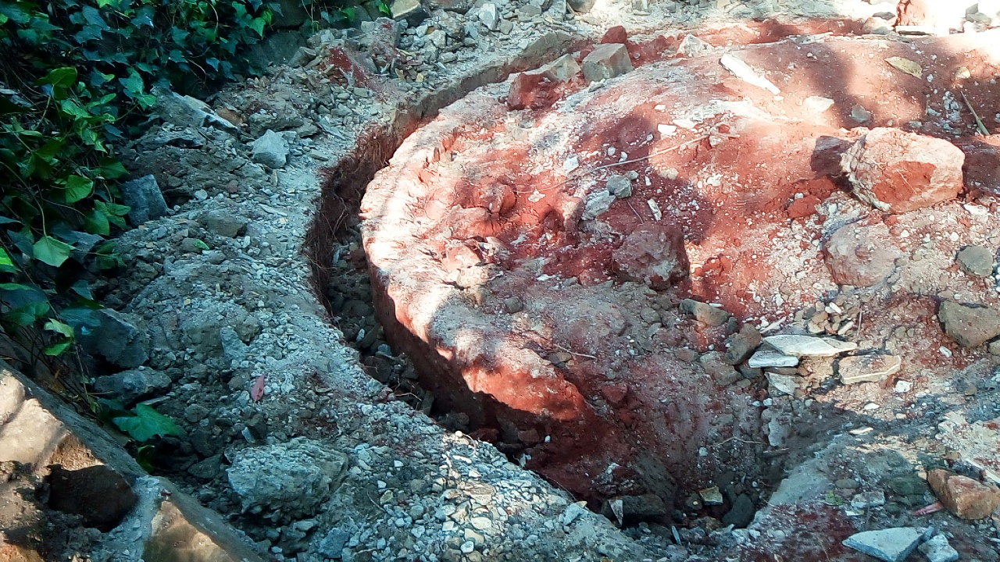
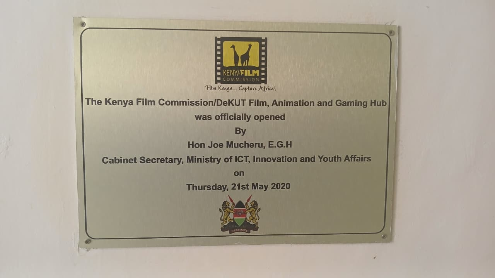
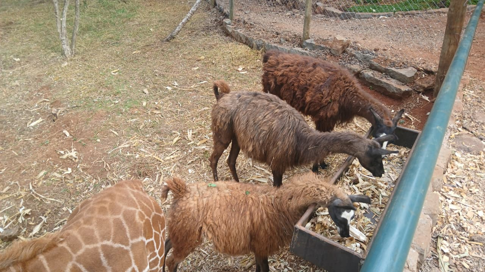
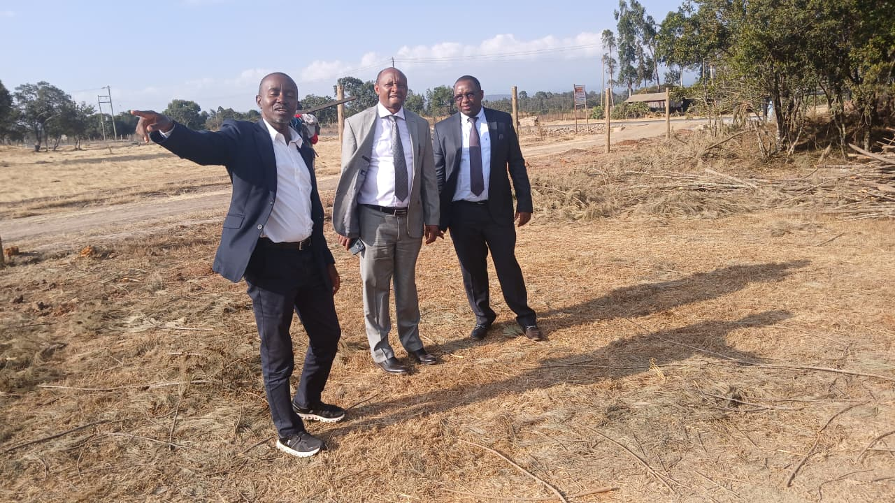

1. Mucheru World of Golf — Dam Works, Earthmoving & Greens Construction
Dam 1 wall smoothening, Dam 2 deepening, soil grading at Greens 5 & 7, hardcore rock breaking & red soil spreading on Greens 1–3
- Dam 2 Deepening (Round 2): Initial excavation of Dam 2 is complete. Operations progressed immediately into the 2nd round of deepening the reservoir floor to maximize water retention capacity.
- Dam 1 Wall Smoothening: Heavy grading was executed along the side slopes and basin walls of Dam 1, delivering a uniformly sloped, smooth earthen profile with clean curved contours.
- Earthmoving & Haulage Operations: The tipper lorries accomplished a total of 75 haulage trips of excavated soil and spoil from the dam basins to designated low areas.
- Heavy Machinery Operating Logs: High machinery utilization was sustained throughout the day to meet excavation deadlines.
| Equipment / Resource | Operating Time / Volume | Operational Scope & Activity |
|---|---|---|
| Hydraulic Excavator | 9 Hours 30 Minutes | Dam 2 deepening (2nd round) & tipper loading |
| Front Wheel Loader | 8 Hours 10 Minutes | Dam 1 wall grading, murram pushing & spoil clearing |
| Tipper Lorry Haulage | 75 Total Trips | Transport and dumping of excavated spoil across site |
- Hardcore Rock Breaking (Greens 1, 2 & 3): Ground teams utilized heavy sledgehammers to break dense hardcore foundation stones into compact sub-base stone beds.
- Red Soil Spreading: Wheelbarrows and shovels were deployed to spread rich red topsoil evenly over the broken hardcore foundation across Greens 1, 2, and 3.
- Soil Levelling around Greens 5 & 7: Extensive ground grading and soil levelling were executed in the surrounding apron zones of Greens 5 and 7, establishing continuous smooth grade transitions.
📷 Mucheru World of Golf Visual Documentation

Dam 1 Curved Wall Smoothening
Panoramic view of Dam 1 displaying clean, graded side slopes and flat reservoir floor after heavy machine grading.

Dam 1 Floor Grading & Compacting
Backhoe loader finishing the far embankment and basin floor, leaving smooth graded lines across the reservoir bed.

Excavated Spoil Haulage & Dumping
Tipper lorry discharging a high-volume load of dark excavated earth onto designated fill zones (75 trips completed).

Hardcore Rock Breaking — Greens 1–3
Crews breaking down large hardcore quarry rocks with sledgehammers to create a stable green sub-base foundation.

Red Soil Spreading over Green Sub-Base
Team using wheelbarrows and spades to distribute rich red topsoil atop the broken hardcore layers for Greens 1, 2, and 3.

Soil Levelling — Greens 5 & 7 Aprons
Broad levelled earth strip graded to smooth out terrain contours adjacent to the established grass on Greens 5 and 7.
2. Chaka Farms — Dairy Yield, Canine Unit, Timber Haulage & Irrigation
Morning & evening milking logs, canine manners and off-leash socialization, golf timber transport, rooftop furniture setup & compound watering
| Production Session | Morning Milking | Evening Milking | Total Daily Yield |
|---|---|---|---|
| Fresh Milk Yield | 4.0 Litres | 2.0 Litres | 6.0 Litres |
- Kennel Manners & Facility Maintenance: Kennel hygiene routines and impulse control exercises during feeding and stall exit.
- Patience, Obeying & Listening Commands: Advanced outdoor pack obedience training focusing on steady down-stays, calm waiting, and strict responsiveness to verbal cues.
- Off-Leash Walking & Livestock Socialization: Canine pack exercised off-leash in pastures, maintaining disciplined neutrality while socializing alongside grazing sheep and goats.
- Home Compound Watering: High-pressure rotary sprinkler system deployed to thoroughly irrigate the extensive turf lawns and landscaped compound grounds.
- Timber Posts Transport: Cleared fallen tree timber logs and posts from the golf course development site were loaded onto tractor trailers and transported to Chaka Farms for farm fencing and repurposing.
- Live-Edge Table Relocation: Handcrafted live-edge hardwood tables with natural root base structures were transported and elevated to the guesthouse rooftop terrace.
📷 Chaka Farms Visual Documentation

Canine Pack Down-Stay & Obedience
Five White Swiss Shepherds calmly executing synchronized down-stay commands on the farm lawn with handler supervising.

Compound Rotary Sprinkler Irrigation
High-pressure irrigation sprinklers covering the dry lawn and shaded compound areas to maintain turf moisture.

Felled Tree Timber Posts Transfer
Farm staff unloading neatly trimmed tree trunk posts from a red tractor trailer to stack in the farm yard for fencing.

Live-Edge Artisan Table Relocation
Two staff members in green uniforms carrying a solid polished live-edge hardwood table to the guesthouse rooftop.
3. Kabete Residence — Glassroom Completion, Tank Sanitization & Site Works
Glassroom lounge completed & furnished, main water storage tank cleaning & flush, fireplace demolition, fence painting & pet care
- Full Completion & Commissioning: The architectural glassroom sunroom lounge and dining extension has been fully completed, cleaned, and furnished.
- Interior Styling & Arrangement: Hardwood dining ensemble, modern sideboard with appliances, plush sectional couches, coffee table, and ceiling pendant lighting are all positioned in pristine condition.
- Panoramic Garden Views: Floor-to-ceiling glass sliding doors and full-height picture windows offer unobstructed views into the surrounding lush garden landscape.
🎉 Major Milestone: Glassroom Extension Ready for Use
Construction, glazing, painting, electrical fixtures, floor tiling, and full housekeeping are 100% complete. The room is fully cleared and operational.
- Main Water Storage Tank Deep Clean: The main elevated water tank underwent a complete interior drain, manual descaling, and high-pressure chemical-free scrubbing of the tank walls, floor, float ball valve, and lid.
- Drainage Line Flushing: Gate valves and outlet pipes were disassembled, cleared of sediment buildup, and re-sealed with PTFE tape for watertight operation.
- Outdoor Fireplace Demolition: Demolition of the old outdoor brick fireplace proceeded with precision; reusable stone masonry blocks were cleanly salvaged and stacked, while the circular base foundation trench was excavated.
- Boundary Fence Posts Paintworks: Application of black weather-resistant protective enamel paint on metal fence posts mounted along the perimeter retaining wall.
- Domestic Pet Care: Routine evening feeding and welfare checks completed for resident dog Ajabu the Golden Retriever and the resident cats (Aiko & Reo).
📷 Kabete Residence Visual Documentation

Glassroom Lounge — Completed & Styled
Pristine view of the completed glassroom showing plush couches, wood-finish flooring, and glass doors opening to the patio.

Glassroom Dining Suite & Garden View
Modern 6-seat dining table and contemporary buffet sideboard situated next to the garden-facing glass picture window.

Glassroom Interior Perspective
View through the sliding glass entrance showcasing coffee table reading arrangements, deep lounge sofa, and natural lighting.

Storage Tank Drainage & Valve Service
Pipe wrench and gate valve fitting during drain-down and silt flushing at the base of the main water tank.

Main Tank Cover & Stand Washout
Black circular tank manhole lid thoroughly washed and rinsed clean on the elevated tank platform.

Inside Water Tank Sanitization
Top-down view inside the water reservoir showing concentric bottom rings and float valve during active descaling.

Sanitized Storage Tank Interior
Sparkling clean, sediment-free tank interior and float ball assembly following final fresh water rinse.

Manual Tank Lid Scrubbing
Close-up of worker using a stiff bristle hand brush and soapy water to scrub biofilm off the tank cover rim.

Fireplace Foundation Clearance
Circular ground trench and red earth cleared following demolition of the old masonry fireplace structure.

Salvaged Stone Blocks Stacking
Uniform dressed masonry stones carefully extracted from the demolished fireplace and stacked for future site reuse.

Perimeter Fence Post Painting
Painter applying durable black gloss anti-rust coating to boundary fence metal uprights along the hedge line.

Boundary Fence Line Protective Coating
Overview of perimeter concrete retaining wall displaying newly painted black steel fence posts against trees.

Domestic Pet Care — Ajabu's Dinner
Ajabu the resident Golden Retriever enjoying his evening dinner on the terracotta tiled verandah.

Domestic Pet Care — Resident Cats
Resident cats (Aiko, Reo & companion) enjoying their evening meal from stainless bowls along the wall.
4. Amani Cottage — Housekeeping, Deep Cleaning & Grounds Care
Housekeeping and room styling, upstairs stone balcony pressure scrub, potted snake plant irrigation & compound sweeping
- Upstairs Balcony & Front Door Washing: The upper outdoor balcony patio and front entrance stone tile flooring were scrubbed down with soapy water and squeegeed clean alongside the rustic fireplace hearth.
- Potted Snake Plant Irrigation: Watered and pruned large potted snake plants (Sansevieria) and trailing foliage situated along the wooden balcony balustrades.
- Thorough Interior Cleaning & Arrangement: Deep cleaning across cottage interior living spaces, bedrooms, furniture dusting, and decorative arrangement.
- Grounds Maintenance: Compound perimeter sweeping and garden litter collection to keep lawns immaculate.
📷 Amani Cottage Visual Documentation

Upstairs Stone Balcony Scrubbing
Housekeeper thoroughly scrubbing the stone paved upper deck floor beside the stone chimney and potted plants.

Balcony Potted Plant Irrigation
Attendant carefully watering flourishing Sansevieria snake plants in rectangular planter boxes on the balcony.
5. DeKUT Theatre Launch, Wildlife Conservancy Tour & Property Visit
Commissioning of KFC CineHub Nyeri, Kimathi Wildlife Conservancy animal feeding, and VC & Council Chairman golf course tour
- Official Theatre Commissioning: A distinguished visit was made to Dedan Kimathi University of Technology (DeKUT) for the grand opening and ribbon-cutting of The KFC CineHub, Nyeri, developed through a strategic collaboration between the Kenya Film Commission (KFC) and DeKUT to nurture Kenya's creative storytelling, animation, and cinema ecosystem.
- Ceremonial Events & Screenings: The commissioning ceremony featured official plaque unveiling, speeches, two short film screenings, and vibrant student cultural Kikuyu theatrical performances.
- Commemorative Gift Exchange: Following the launch, Mr. Joe Mucheru was formally presented with a gift pack of premium Grade AA DeKUT Coffee by the DeKUT Council Chairman and Vice Chancellor in the university boardroom.
- Kimathi Wildlife Conservancy Tour: The Vice Chancellor and Council Chairman personally hosted Mr. Joe Mucheru and Dennis on an exclusive wildlife tour of the Kimathi Wildlife Conservancy, viewing and hand/bottle-feeding young giraffes and llamas.
- Return VIP Golf Course Tour: Following the conservancy tour, the DeKUT Vice Chancellor and Council Chairman visited Mr. Mucheru's property, receiving an extensive guided walking tour of the ongoing golf course earthmoving, dams, and fairway developments.
- Afternoon Tea at Residence: The official university engagement and site visit concluded with hospitality and afternoon tea at the residence.
📷 DeKUT Launch, Conservancy & Golf Tour Visual Documentation

KFC CineHub Nyeri Plaque Unveiled
Commemorative gold plaque commissioned on 14th August 2026 celebrating the KFC and DeKUT cinema hub partnership.

DeKUT Film & Gaming Hub Foundation Plaque
Historical foundation plaque commemorating the opening of the Film, Animation and Gaming Hub by Hon. Joe Mucheru.

Grade AA DeKUT Coffee Presentation
DeKUT VC (left) and Council Chairman (center) presenting Hon. Joe Mucheru (right) with university-grown Grade AA Coffee.

Kimathi Conservancy Giraffe Interaction
L–R: DeKUT Vice Chancellor, Council Chairman, and Hon. Joe Mucheru feeding a giraffe at the wildlife sanctuary.

Bottle-Feeding Baby Giraffe
Feeding milk to a young giraffe over the observation fence at Kimathi Wildlife Conservancy with Chairman observing.

Llamas & Giraffe at Feeding Trough
Trio of brown llamas and young giraffe feeding peacefully together from a raised feed trough at the conservancy.

Mucheru World of Golf Project Briefing
Mr. Joe Mucheru pointing across the terrain explaining the golf layout to DeKUT Chairman (center) and VC (right).

Golf Course Walking Site Tour
Hon. Joe Mucheru walking the fairway contours with the DeKUT leadership delegation during their site inspection visit.